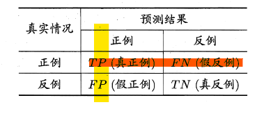
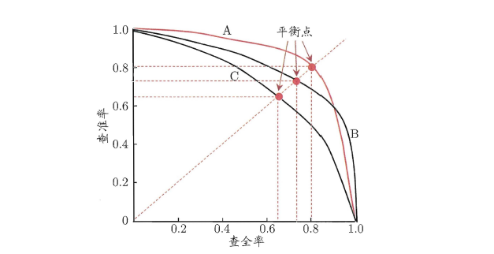
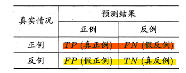
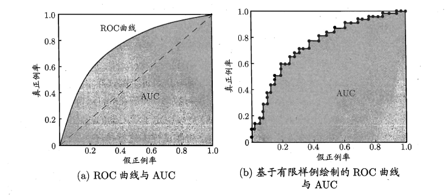
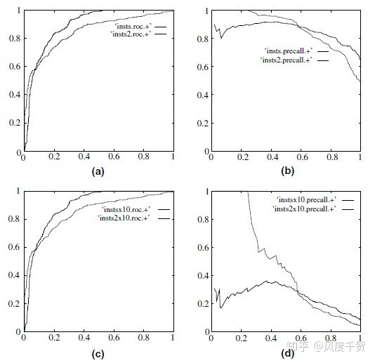
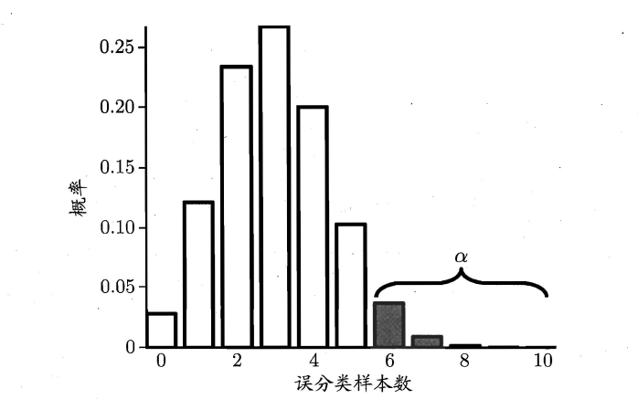
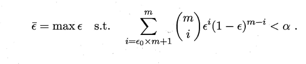
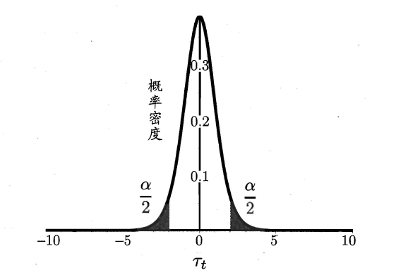
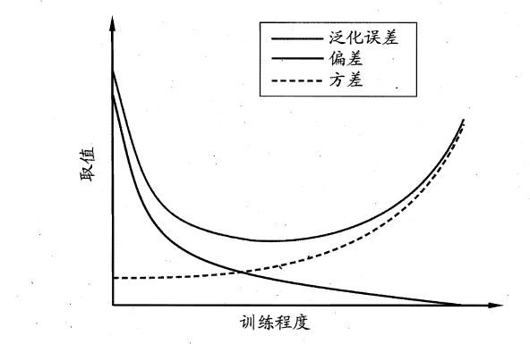

西瓜书第二章-模型评估与选择，讲述如何划分数据集进行训练，以及如何评价训练完的模型
经验误差与过拟合
误差指实际预测输出和样本真实值之间的差异，学习器在训练集上的误差叫做训练误差（training error）或者经验误差（empirical error），在没有见过的新数据集上的误差叫做泛化误差（generalization error）。
泛化误差最小的模型是训练师最希望得到的模型，但泛化误差通常无法直接获得。由于过拟合现象的普遍存在，训练师也无法只通过训练误差来选择模型。为此引入测试集，使用测试误差（testing error）来近似泛化误差。测试集一般假设，其中样本乃是从真实分布中独立同分布采样得到（IDD random variables），同时应当保证测试样本不在训练集中出现（未见过的新数据集）。
模型评估与数据集的划分
通常，训练师能拿到一个样本数量为 $m$ 的数据集 $D$ ，训练集和测试集数据都从中获得。对于不同的数据集有三种划分方式，不同的划分方式会带来不同的评估结果。
留出法
留出法可以理解为直接划分法，讲数据集打乱或随机采样，按照一定的比例7：3或8：2或9：1划分数据集 $D$ 。为了增加模型的可靠性，通常会对数据进行多次划分，对每一组划分结果都进行评估，重复实验取平均结果。
交叉验证法
又称k折验证方法（k-fold cross validation），指的是将数据集 $D$ 划分为 $k$ 个大小一致的子集，然后进行 $k$ 次训练，每次取出一个子集作为测试集，其余$(k-1)$个子集作为训练集，$k$ 次测试结果的平均值作为最终评估结果。
其特例为留一法（leave-one-out），每次只拿出一个样本作为测试，重复 $m$ 次实验，将所有的实验结果取平均。留一法可以保证训练集的数据分布非常接近原数据集，其结果被认为是最接近真实数据集，但训练次数最多，对于深度学习模型来说，重复如此多次的实验的成本是不可接受的。
自助法
自助法（bootstrapping）又被乘坐放回取样法，如名字所说的一般，自助法会进行 $m$ 次放回取样得到与原数据集相同大小的数据集 $D’$，该数据集作为训练集，$D-D’$
（集合相减）作为测试集。样本在m次采样中不被采到的概率为
因此测试集的大小约为原数据集的0.368倍，且测试集与训练集数据互斥。
自助法优点：
- 适合数据集样本数量较小的适合，可以保证训练集不至于过小
缺点： - 训练集中出现了重复数据，导致数据分布和原始数据集出现了一定差异
自助法是一种样本匮乏情形下的折衷办法，对于样本数量足够的数据还是使用前两种方法较好。
什么是调参
参数可以划分为模型参数与超参数。超参数通常不会超过10个，可以在若干参数候选值中手动调节；模型参数可达到上亿的级别，对于深度学习而言，模型参数的调参可以通过在不同时机停止训练来进行控制，但这种控制通常无法具体到某一个参数的特定变化，可解释性比较差。
性能度量指标
对于不同的任务，机器学习器f的性能度量指标有所不同。
回归任务中常用的性能度量为MSE均方误差：
对于概率密度函数p，均方误差：
下面讨论分类任务
错误率和精度
错误率：
精度：
对于概率分布则等同于回归问题，乘以概率密度函数并积分
查准查全和P-R曲线

不论是二分类问题还是多分类问题，总可以针对每一类对象求取分类结果的混淆矩阵（Confusion Matrix）
查准率Precison
查重率Recall
写出混淆矩阵之前需要先确定判断预测结果的阈值threshold，改变阈值可以得到不同的P和R值，画在图上就得到了P-R曲线，可以看到，两者是负相关的

图中A、B、C是针对同一个问题的三个学习器的P-R曲线，A明显要好于C，因为其曲线包围了C，但A和B就不好直接判断优劣了。
为此，有1.比较面积 2.比较平衡点 3.比较F1值三种方法来比较两个P-R曲线的优劣。
- 比较P-R曲线下和坐标轴包围的面积，越大越好，这通常不好计算
- 比较平衡点，即P-R曲线上P=R的点，可以看到A的平衡点大于B的平衡点对应的数值
- 确定某一threshold，计算F1分数
F1分数是P和R的调和平均数，调和平均数的特点是会看重数值较小的一边
对应多个混淆矩阵，可以计算平均的macro-P和macro-R，再一起计算macro-F1，宏F1；或者先计算TP等数值的平均值，再计算micro-P，micro-R，以及micro-F1
注：在目标检测任务中用mAP来表示性能，这时的AP是在求解每一类P-R下的面积，然后求AP平均值即为mAP，目标检测中的TP为预测框和GT框的IoU大于阈值（每个GT仅计算一个TP，多余的即使分类正确且满足IoU条件也会算FP）
ROC曲线于AUC
ROC与PR一样是一条曲线，且坐标轴的数值也是来自于混淆矩阵，ROC全称为Receiver-Operating-Characteristics受试者工作特征
ROC纵轴为True Positive Rate真正例率(其实就是召回率recall)
横轴为假正例率False Positive Rate

横纵轴数值呈现正相关的关系，这条曲线越向左上方就越好

以下来自知乎用户“风度千贺” https://zhuanlan.zhihu.com/p/104917232
定理1：对于一个给定的包含正负样本的数据集，ROC空间和PR空间存在一一对应的关系，也就是说，如果recall不等于0，二者包含完全一致的混淆矩阵。我们可以将ROC曲线转化为PR曲线，反之亦然。
定理2：对于一个给定数目的正负样本数据集，一条曲线在ROC空间中比另一条曲线有优势，当且仅当第一条曲线在PR空间中也比第二条曲线有优势。（这里的“一条曲线比其他曲线有优势”是指其他曲线的所有部分与这条曲线重合或在这条曲线之下。）

当正负样本差距不大的情况下，ROC和PR的趋势是差不多的，但是当负样本很多的时候，两者就截然不同了，ROC效果依然看似很好，但是PR上反映效果一般。解释起来也简单，假设就1个正例，100个负例，那么基本上TPR可能一直维持在100左右，然后突然降到0.如图，(a)(b)分别为正负样本1:1时的ROC曲线和PR曲线，二者比较接近。而(c)(d)的正负样本比例为1:1，这时ROC曲线效果依然很好，但是PR曲线则表现的比较差。这就说明PR曲线在正负样本比例悬殊较大时更能反映分类的性能。
Quora上关于这个问题也进行了讨论
https://www.quora.com/What-is-the-difference-between-a-ROC-curve-and-a-precision-recall-curve-When-should-I-use-each
Recall/Sensitivity is the measure of the probability that your estimate is 1 given all the samples whose true class label is 1. It is a measure of how many of the positive samples have been identified as being positive.
Specificity is the measure of the probability that your estimate is 0 given all the samples whose true class label is 0. It is a measure of how many of the negative samples have been identified as being negative.
PRECISION on the other hand is different. It is a measure of the probability that a sample is a true positive class given that your classifier said it is positive. It is a measure of how many of the samples predicted by the classifier as positive is indeed positive. Note here that this changes when the base probability or prior probability of the positive class changes. Which means PRECISION depends on how rare is the positive class. In other words, it is used when positive class is more interesting than the negative class.
So, if your problem involves kind of searching a needle in the haystack when for ex: the positive class samples are very rare compared to the negative classes, use a precision recall curve. Othwerwise use a ROC curve because a ROC curve remains the same regardless of the baseline prior probability of your positive class (the important rare class).
总结来说，ROC曲线讨论的是Recall和Negative Recall，对正例和负例都比较关心，PR曲线则主要关心正例，不关心负例的Recall情况，在样本不平衡的时候PR曲线会出现巨大的波动。ROC、AUC反映了学习器的“整体期望性能”。
AUC(Area Under Curve)是ROC曲线下面的面积，越大越好。
代价敏感错误率和代价曲线
即正例与负例错误的代价不相同，这比较容易理解，不同场景中错误的代价是不一样的：门只要坏一次家里财产就不安全了（要求Precision极高），但医生漏判比误判更致命（Recall十分重要）。
前面性能度量的方式大多不考虑不等代价，或者默认了“均等代价”。
非等价代价的前提下，ROC曲线无法反映学习器的期望总体代价，需要另外绘制代价曲线Cost Curve，其横轴为正例概率代价取值(0,1)
p是样例为正例的概率，纵轴是归一化代价
利用ROC曲线上的每一点对应代价曲线平面上的一条直线，所有的直线包络形成一个区域，该区域的面积为期望总体代价
比较检验
这一部分会描述比较的可信度，即严谨对比两个学习器的性能优劣需要给出，一个判断和这个判断的可靠度。
即这句话可能是“A比B的F1值大，有95%的概率认为A的学习器性能优于B”，或者说A的泛化性能是否在统计意义上大于B，这个结论的把握有多大。
这种不确定性可以来自于几个方面：
- 真实数据集无法完全获得，不能用测试集完全代替
- 不同测试集样本分布的不同会影响测试误差
- 有些算法本身有一定随机性
两种假设校验方法
假设学习器在测试集上的错误率为$\hat\epsilon$，近似等于泛化错误率$\epsilon$，则在测试集上误分类$m’$个样本的概率为
这符合二项分布

上图中m=10，误差率为0.3，可以看到误分类3个的概率最大

上式是用二项分布来表示，满足概率大于（1-$\alpha$）的条件下，能够取到的最大的错误率临界值。这么说还不太清楚，举个例子，假设图中大于误分类3个的概率值之和为0.4，则可以说对于一次实验，我们有60%的置信度确认误分类率小于0.3
在使用多次留出法或者交叉验证时，会获得k个测试集错误率，可以计算错误率均值与方差，并用这个统计量构造变量
该变量满足自由度（k-1）t分布

该变量的值落在两侧阴影区域的概率为$\alpha$，若t位于中间区域，则认为有$1-\alpha$的置信度说泛化误差率为$\epsilon_0$
对于二分类问题，可以使用McNemar检验（卡方分布校验）来判断两个学习器A、B的分类性能是否一致
若有多个分类器，在同一组数据上进行比较，可以使用Friedman检验，其假设所有的算法性能相同，若该假设被拒绝，则表示个算法性能显著不同，需要进行“后续检验” （post-hoc test）来进一步区分各算法，常用的有，Nemenyi后续检验
偏差与方差
偏差和方差是对解释算法泛化性能的一种工具。
泛化误差可以分解为偏差、方差与噪声之和
假设$y$是样本真实标记 $y_D$是数据集中的标记（相比y有噪声） $f(x)$是学习算法的期望预测输出 $f(x;D)$为实际模型的预测输出
- 偏差：度量的是学习算法的拟合能力（训练集）
方差：指同样大小的训练集变动导致的学习性能的变化（不同训练集分布情况的变化，或者说是当前训练集区别于其他数据集的独有特点造成的变化）
噪声：指当前任务任何学习算法所能达到的期望泛化误差的下界，即学习问题本身的难度

一般而言，方差和偏差是冲突的，开始的时候训练不足，偏差主导了泛化错误率，训练的主要问题是欠拟合underfit；后续学习器拟合能力增强，训练数据发生的扰动逐渐被注意到，进而方差主导了泛化误差，从而发生了过拟合overfit